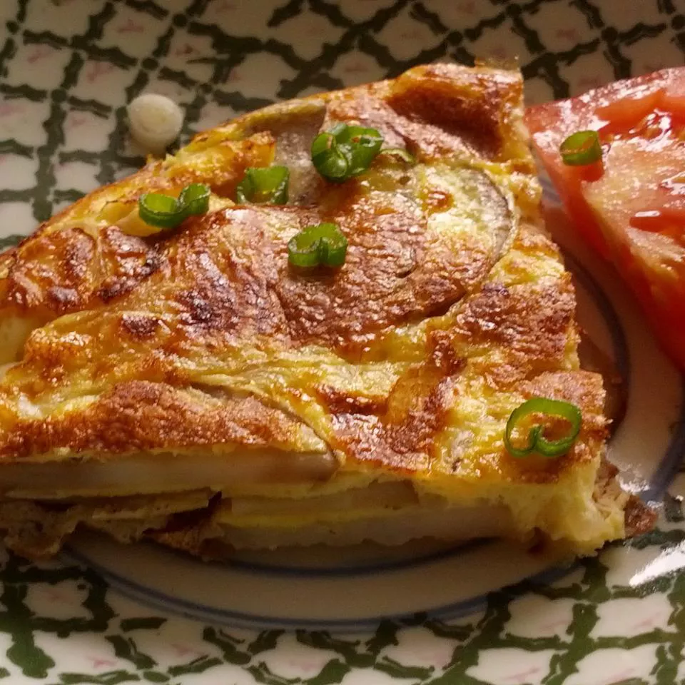

Spanish Omelette

Description Of The Recipe
A Spanish omelette is made with tender fried potatoes and onions cooked with eggs for a hearty meal or
delicious tapa dish that everyone will enjoy.
Ingredients
- Half cup olive oil
- Half pound potatoes, thinly sliced
- Salt and pepper to taste
- 1 large onion thinly sliced
- 4 large eggs
- 2 medium tomatoes-peeled, seeded, and
coarsely chopped(optional)
- 2 green onions, chopped(Optional)
Steps
- Heat oil over medium-high heat in a large skillet.
Add potatoes and season lightly with salt and pepper;
cook, stirring occasionally, until golden brown and crisp, 10 to 14 minutes.
Add onions; cook and stir until soft and beginning to brown, 6 to 8 minutes.
-
Whisk eggs in a bowl; season with salt and pepper.
Pour eggs into the skillet and stir gently to combine with potatoes and onion.
Reduce the heat to low and cook until eggs begin to brown on the bottom, 4 to 5 minutes.Whisk eggs in a bowl; season with salt and pepper.
Pour eggs into the skillet and stir gently to combine with potatoes and onion.
Reduce the heat to low and cook until eggs begin to brown on the bottom, 4 to 5 minutes.
-
Loosen omelette with a spatula. Invert a large plate over the pan, and carefully
flip omelette out onto the plate. Slide omelette, uncooked-side down, back into
the pan. Cook until eggs are set, 4 to 5 minutes.
-
Serve warm, garnished with tomato and green onion.